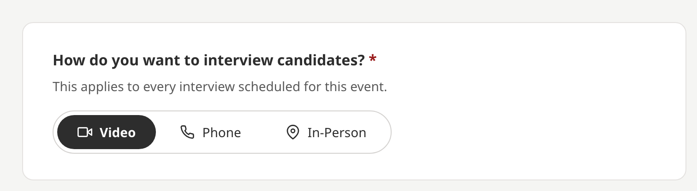
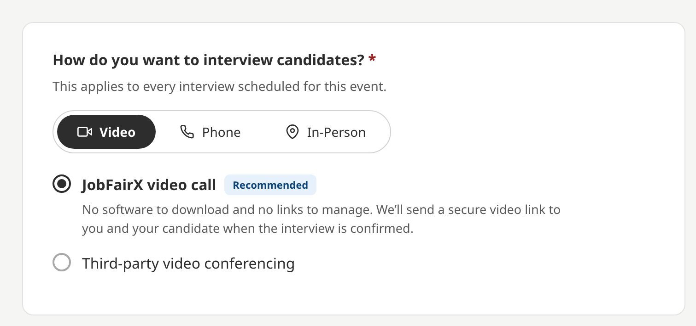
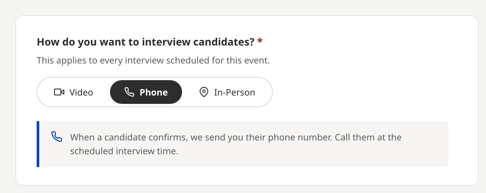
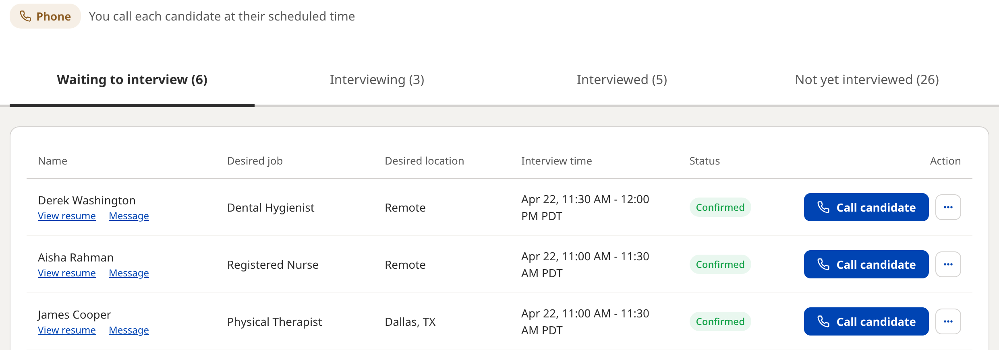
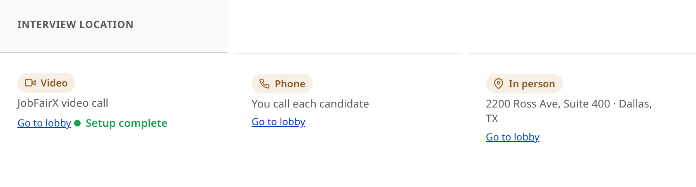
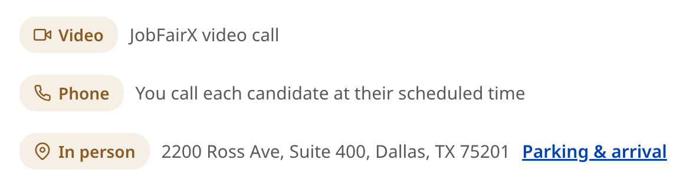

Choosing your interview location
Where every interview at your event happens: on a JobFairX video call, in person at your location, or by phone. How to set it, what each option asks for, and what candidates receive.
What the interview location is
The interview location is where every interview at your event happens. You choose one of three when you register: Video, Phone or In-Person.
It is an event setting, and the setup page says so under the question: This applies to every interview scheduled for this event. Every candidate who requests an interview comes in on the location you chose, and their confirmation tells them how to join or where to go.

Where to set it
You choose the interview location while you set up the event. The question is How do you want to interview candidates? under Interview details.
- Find How do you want to interview candidates?
- Select Video, Phone or In-Person.
- Fill in what that option asks for, described below.
- Select Continue.
Once you publish your jobs for the event, the interview location is locked and can't be changed. Choose it before you publish.
The location above applies to the whole event. Rescheduling a single interview is the one place it can differ: when you propose a new time you can also change that interview's location, and the change applies to that interview only. The event setting stays as it is, and every new request still arrives on it.
Video

JobFairX video call needs no software and no links from you. JobFairX sends a secure video link to you and the candidate when the interview is confirmed, and the interview runs in the JobFairX interview room.
If your team prefers its own meeting tool, choose Third-party video conferencing and paste your Zoom, Microsoft Teams, Google Meet or Webex link in Meeting URL. Candidates receive that link with their interview confirmation.
Panel interviews and the AI note taker are built into the JobFairX video call. They are not available when interviews run on your own meeting link, in person or by phone.
In person

Choose In-Person when candidates come to you. Enter the Interview address, with a suite or unit if you have one, and use How to attend for parking, which entrance to use and who to ask for when they arrive.
The address and those details are included in every candidate's interview confirmation. The address is never shown on the public event page. A candidate sees it once they are matched to your event or request an interview.
On the day, candidates check themselves in by scanning a QR code at your door. In-person events and the check-in tool explains how it works.
Phone

Choose Phone when you want to call candidates. When a candidate confirms, JobFairX sends you their phone number, and you call them at the scheduled interview time.
On the day, the lobby lists each phone interview with a Call candidate button, and the event header reminds your team that you call each candidate at their scheduled time.

Where the location shows
Once it is set, the location appears wherever the event does. On your dashboard, the Interview location column shows the option and its detail for each event. In the lobby, the same detail sits under the event name, so everyone interviewing sees it at a glance.


Compare the options
| Option | Where the interview happens | What the candidate receives | Panel interviews and AI notes |
|---|---|---|---|
| JobFairX video call | In the JobFairX interview room | A secure video link in their confirmation | Yes |
| Third-party video | On your own meeting link | Your meeting link in their confirmation | No |
| In-Person | At your address | The address and how to attend in their confirmation | No |
| Phone | On a call you place | A confirmed time; you call them | No |
What to do next
Where to go from here.
- Creating and editing events Adding jobs, choosing how you interview, and setting capacity.
- Choosing your interview slot length 15 or 30 minute interview slots, and how the choice shapes your event day.
- Panel interviews Bringing more than one interviewer into the same video interview.
- AI interview notes What the note taker records in a video interview and what it never does.
- Running your event day What the lobby shows before and during an event, and how to run an interview.
Still need help?
If something on this page does not match what you see in your account, contact JobFairX support and include your event name and date.